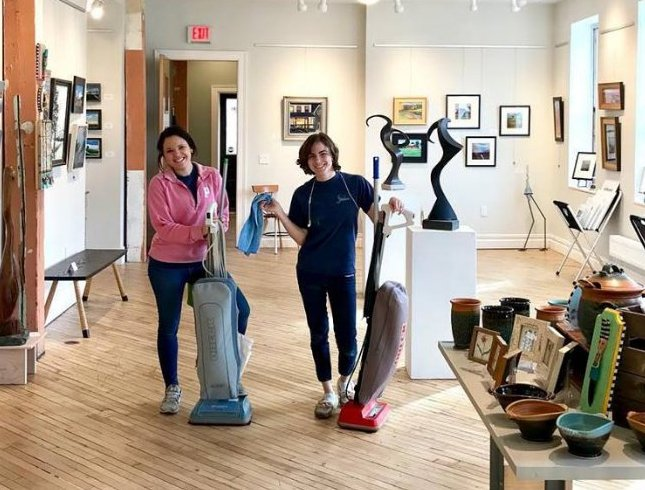

Cleaning
Residential Cleaning
We provide one-time cleaning services as well as on-going cleaning services. No contract is required since we think the quality of our work speaks for itself and will make you want to invite us back into your home over and over.
SOME of the residential cleaning tasks we perform include:
-

- Vacuuming, Sweeping, and Mopping Floors
- Bathroom Cleaning
- Dusting Furniture, Baseboards, and Ceiling Fans
- Trash Removal
- Appliance Cleaning-interior and exterior
- Cupboard Cleaning-interior and exterior
- Cobweb Removal
- Carpet Cleaning
- Upholstery Cleaning
- Window Washing - interior and exterior
- Is there something else you need but don't see it on this list? Just ask!!
Your home should sparkle... let Something Better, Inc. help!
Commercial Cleaning
You've worked long and hard to build a business that you can be proud of and you want it maintained to your standards. Something Better keeps your small- to medium-sized office clean and appealing to you, your workers, and your clients.
We clean between the hours of 8 a.m. and 4 p.m. on Monday through Friday. No contract is required since we think the quality of our work speaks for itself and will keep you wanting to maintain a relationship with us for years to come.
SOME of the commercial cleaning tasks we perform include:
- Vacuuming, Sweeping, and Mopping Floors
- Bathroom Cleaning & Re-stocking
- Trash Removal
- Dusting Furniture, Baseboards, and Trim
- Appliance Cleaning - interior and exterior
- Carpet Cleaning
- Tile Refinishing
- Window Washing - interior and exterior
- Apartment Turnovers
Your business should sparkle ... let Something Better, Inc. help!
"Spring Cleaning"
Sometimes your home just needs a deeper clean and we're here to help with that. The list is endless but SOME of the tasks we're asked to do during deeper cleans are:
- Oven cleaning
- Refrigerator/freezer interior cleaning
- Wet wiping baseboards
- Cleaning chandelier pendants
- Cleaning the inside of the china cabinet
- Washing cabinet exteriors
- Carpet cleaning
- Upholstery cleaning
- Removing books from bookshelves to dust the shelves and books
Post-Construction Cleaning
The investment of time and money in a new construction project is considerable. Whether you
ing in your home OR you're a contractor building out spaces for your client, you can trust Something Better, Inc. to get the job done with impeccable results.
We provide all cleaning products and equipment. We provide a free quote for the level of service that fits your needs. SOME of the post-construction cleaning tasks we perform are:
- Remove dust from all horizontal and vertical surfaces
- Dust wall and light fixtures
- Wipe doors and trim
- Disinfect kitchen and bathrooms
- Shine stainless steel throughout
Move-in/Move-out Cleaning
Moving into a home and out of a home is a busy, busy time. Both situations need cleaning services but they typically need very different types of service. We can handle both!Move-In Cleaning
When you're moving into a home, you want it to be YOUR home. You don't need unwelcome crumbs in the pantry, dried cough syrup in the medicine chest, or dusty baseboards to remind you of the previous owner. We'd love to make your new home all yours and only yours.
SOME of the move-in cleaning tasks we perform are:
- Wet wipe doors, trim, and baseboards throughout
- Wash window interiors and exteriors
- Clean wall and light fixtures
- Clean appliance interiors and exteriors
- Clean inside pantry, drawers, cupboards in the kitchen
- Clean inside drawers, cupboards, and medicine chests in the bathrooms
- Vacuum and mop floors
- Remove cobwebs in the basement
- Remove cobwebs and dirt in the garage
Moving out of a home can be a bit different than moving in. Your real estate agent will usually tell you that you just need to 'broom sweep' your home. That means that you only need to do a very basic wipe and vacuum of surfaces. Some of our clients, however, like to do a deeper cleaning for the new owner. We'll work with you to learn what YOUR specific wishes are and will carry them out to a 'T'.
Click here for Cleaning FAQs